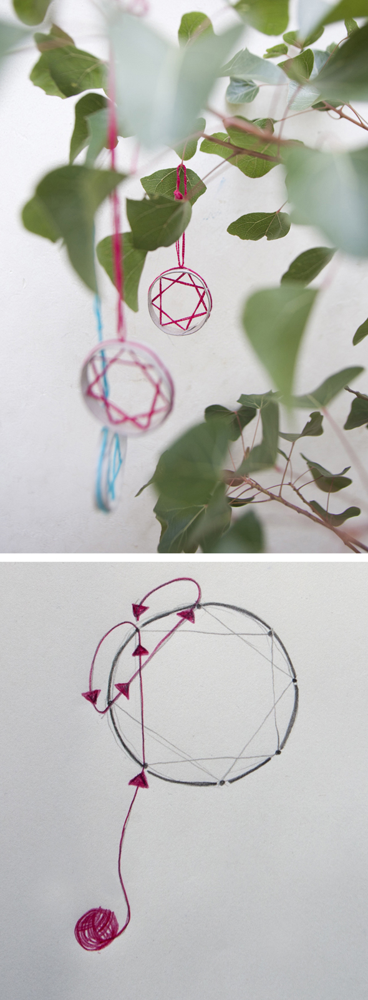

Adornos para árboles de Navidad.
Hemos cortado tiras de rollos de papel higiénico y hemos dividido cada círculo en 8 secciones señalando con un agujero en medio. Si pintas el circulo en un papel será más fácil y puedes utilizar tu dibujo para todos los demás. Con la aguja se enhebra el hilo de sección a sección siempre saltando uno (ver dibujo). Nuestro primer adorno para el árbol de Navidad.
Christmas tree ornaments.
We have cut toilet paper rolls into strips and we divided each circle into 8 sections marking them a with hole. If you paint a circle on a paper, it´s easier and you can use your drawing for all you the stars you want to make. With a needle is you thread from section to section always skipping one (see drawing). Our first Christmas tree decorations.
Tannenbaumschmuck.
Wir haben Klorollen in Streifen geschnitten und den jeweiligen Kreis in 8 Abschnitte geteilt, die man durch ein Loch in der Mitte makiert. Wenn man den Kreis auf ein Papier malt, ist es einfacher und kann diesen dann für alle weitern nutzen. Mit einer Nadel fädelt man den Faden von Abschnitt zu Abschnitt immer einen überspringend (siehe Zeichnung). Fertig ist der Tannenbaumschmuck.
